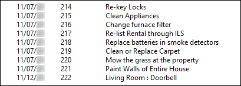
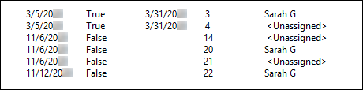

Source: https://rmxhelp.rentmanager.com/Topics/Express/Other/Scripts/Function-Issue-History.htm
Issue History Function (Script)
This function displays entries in the Issue History tile of the selected service issue, which tracks service issues that are linked to the entities associated with this issue, based on the parameters specified.
The default output of the function displays below. The Format parameter can be used to customize this output, as shown in the last example in this topic.

The class that utilizes this function and the location from where the scripting information is pulled in Rent Manager can be found in the table below.
| Class | Syntax |
|---|---|
|
[ServiceManager().IssueHistory()] Displays information from the Issue History tile of the service issue. |
Parameters
Parameters change what the function examines and/or how it displays results. The parameters available to this function are indicated below and must be specified in the order listed in the following syntax. Required parameters must be assigned values for the function to work. For Optional parameters, if no value is provided in the script, Rent Manager uses default values.
[IssueHistory("ServiceIssueID","FromDate","ToDate","IsClosed","Format")]
ServiceIssueID
Select the service issue with this Issue ID. If this parameter is not specified, it defaults to the oldest/first issue on the linked account.
More Information
If ServiceManager is the only class, its parameter is ServiceIssueID. If another class precedes the ServiceManager class, the ServiceManager class instead uses the Index parameter, and the entity of the preceding class must be associated with a service issue in order for the script to return results.
[IssueHistory("212")]
Displays information from associated service issues for service issue number 212.
FromDate
Specify the date on or after which to examine issue history. If no date is specified, the function uses the beginning of time.
[IssueHistory("","1/1/2026")]
Displays information from associated service issues opened on or after January 1, 2026.
ToDate
Specify the date on or before which to examine issue history. If no date is specified, the function uses the end of time.
[IssueHistory("","","6/1/2026")]
Displays information from associated service issues opened on or before June 1, 2026.
IsClosed
Specify True to examine only closed service issues. Specify False to examine only open service issues. Leave this parameter blank to examine both closed and open service issues.
[IssueHistory("","9/1/2026","","True")]
Displays information from closed associated service issues opened on or after September 1, 2026.
Format
List details of each issue history item using a special format sequence.
Use \t to insert a tab.
Use \n to insert a new line.
Default Format
If no custom format is specified, Rent Manager's default formatting displays the date, issue number, and title, separated by tabs:
"\t$_CreateDate\t$_IssueID\t$_Title\n"
Variables
The following variables may be used in the Format parameter.
| Variable | Description |
|---|---|
|
$_AssignedClosedDate |
Displays the date the issue was closed and saved in Rent Manager. |
|
$_AssignedTo |
Displays the user in the issues Assigned To User field. |
|
$_Category |
Displays the issue category in the Category field. |
|
$_ClosedDate |
Displays the date in the issue's Close Date field. |
|
$_CreateDate |
Displays the date in the issue's Open Date field. |
|
$_Date |
Displays the date the issue was opened and first saved in Rent Manager. |
|
$_Description |
Displays the text in the issue’s Description field. |
|
$_DueDate |
Displays the date in the issue's Due Date field. |
|
$_Hours |
Displays the total number of hours in the issue's Details tile. |
|
$_IsClosed |
Displays True if the issue is closed, and False if it is not. |
|
$_IsRead |
Displays True if the issue has been opened by the user, and False if it is not. |
|
$_IssueID |
Displays the system-generated number for the service issue. |
|
$_Priority |
Displays the issue priority level in the issue's Priority field. |
|
$_Resolution |
Displays the text in the issue's Resolution field. |
|
$_Status |
Displays the issue status in the issue's Status field. |
|
$_Title |
Displays the description text in the issue’s Title field. |
|
$_UpdateDate |
Displays the date the issue was last updated and saved in Rent Manager. |
IssueHistory("","","","","\t$_IssueID\t$_Category\t$_Status\t$_ClosedDate\n")
Displays a new line with a customized list of the issue number, the issue's assigned category, current status, and the date the issue was closed, separated by tabs for each issue history item.
Script Examples
The following scripts show various ways the function can be used:
[Tenant().ServiceManager().IssueHistory()]
Displays all issue history items for the tenant's oldest service issue.
[ServiceManager().IssueHistory("56","","","True")]
Displays all closed issue history items for issue number 56.
[Tenant().ServiceManager(1).IssueHistory("","1/1/2026","12/31/2026")]
Displays all issue history items that were opened in the year 2026 for the tenant's second oldest service issue.
[ServiceManager().IssueHistory("101", "", "", "False", "\n$_CreateDate\t$_IsClosed\t$_ClosedDate\t$_IssueID\t$_AssignedTo")]
Displays a new line with a customized list of the create date, whether or not the issue is closed, the closed date, issue number, and the user assigned to the issue for each open issue history item for issue number 101.
The output displays as shown below:
